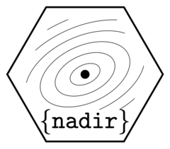

Authors and Citation
Authors
-
Christian Testa. Author, maintainer.
-
Nima Hejazi. Thesis advisor, author.
Citation
Source: DESCRIPTION
Testa C, Hejazi N (2025). nadir: Super learning with flexible formulas. https://ctesta01.github.io/nadir/, https://github.com/ctesta01/nadir/.
@Manual{,
title = {nadir: Super learning with flexible formulas},
author = {Christian Testa and Nima Hejazi},
year = {2025},
note = {https://ctesta01.github.io/nadir/, https://github.com/ctesta01/nadir/},
}